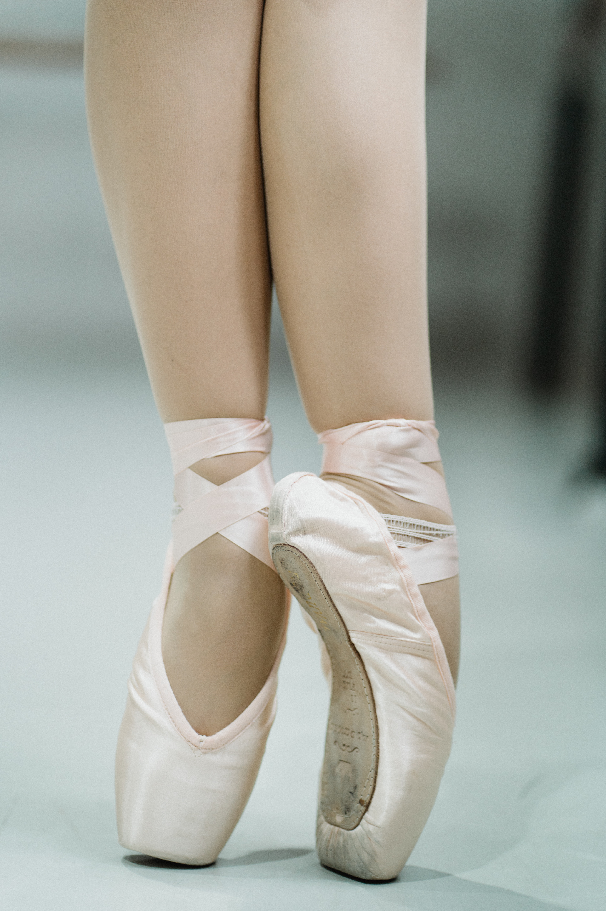
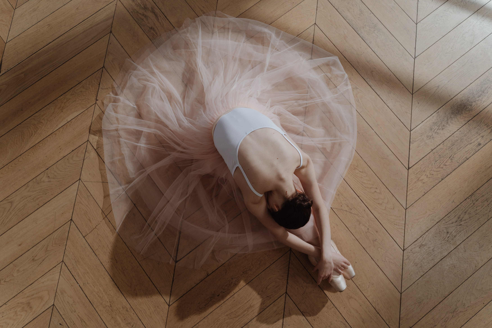
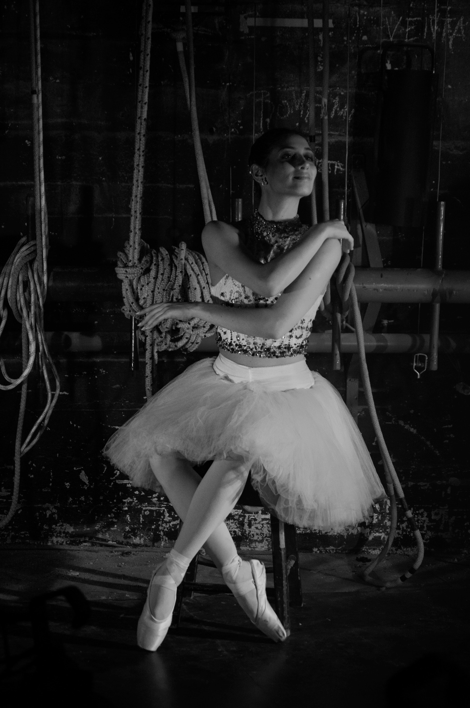
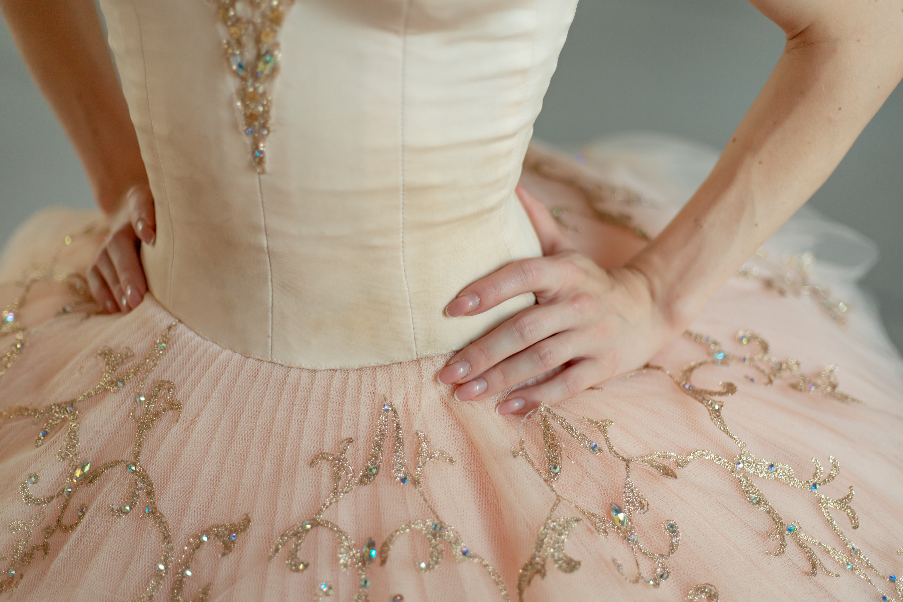
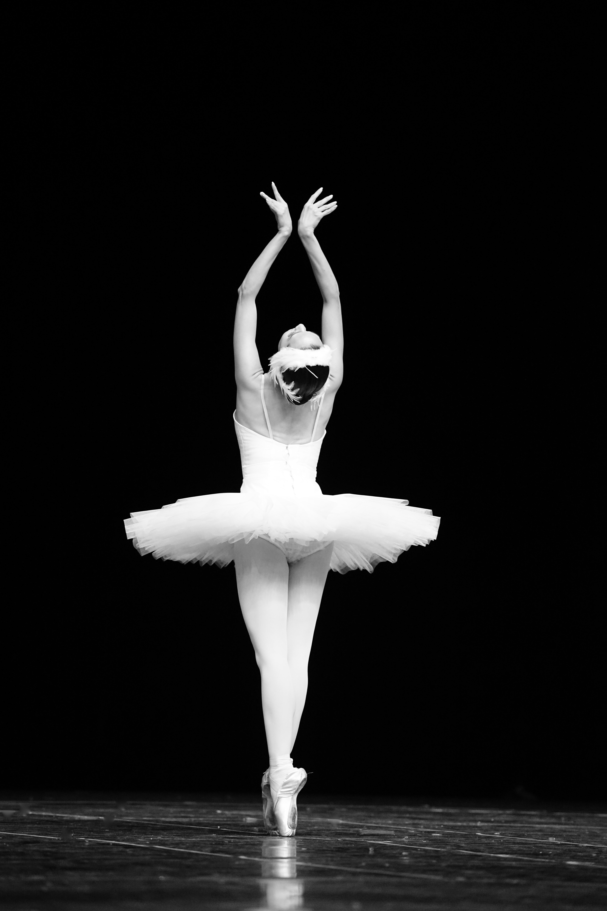
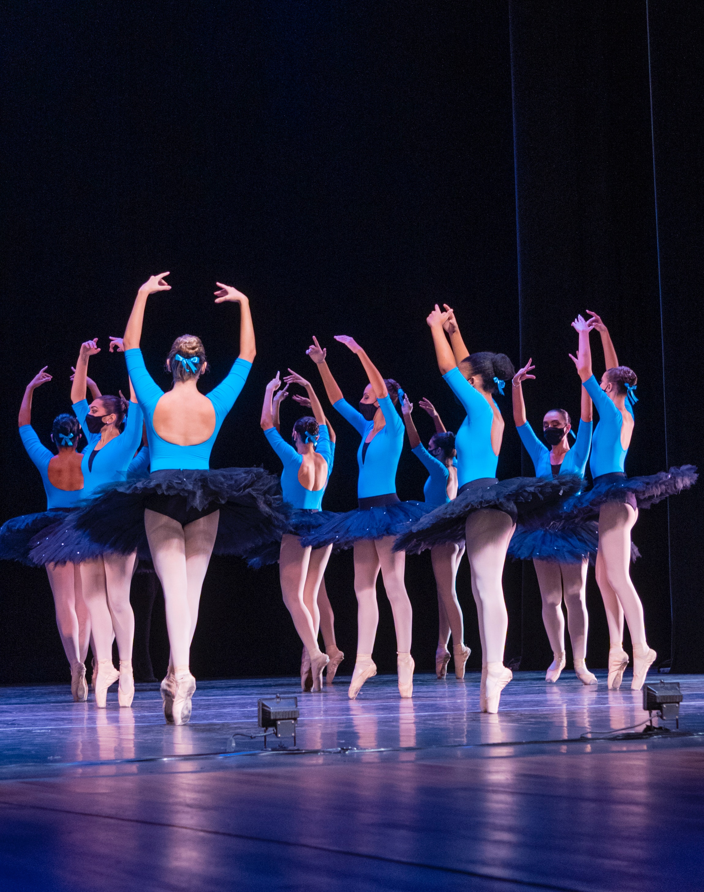
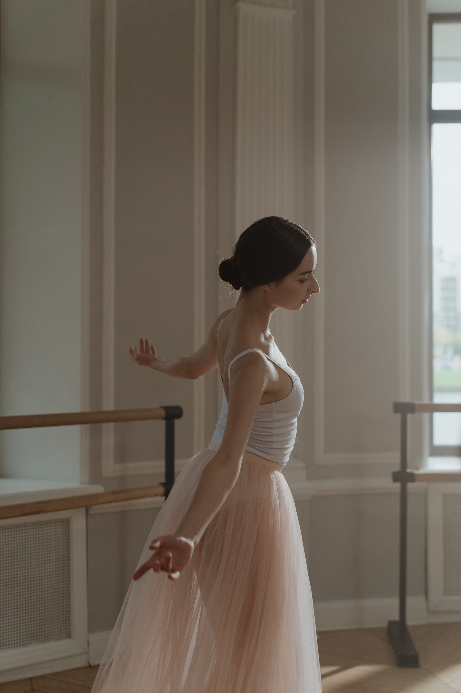
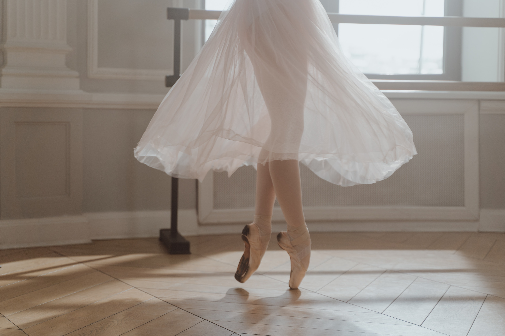
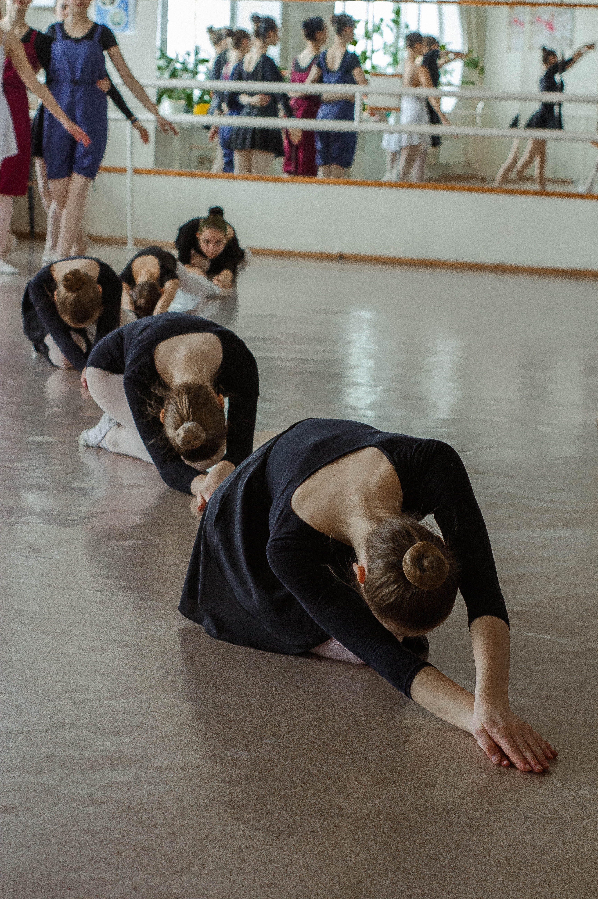

Watch this short video to learn more about ballet.

As a classically-trained ballet dancer, I want to share my love of this extreme & elegant art form.
History of Ballet
Ballet originated during the Italian Renaissance period in history. It developed into a performance-focused art form under the patronage of French King Louis XIV, also known as the 'Sun King'. Politcal motivations interfered with his passion for dance and he established strict social etiquttes around dance, which was then considered one of the most crucial elements of court life at that time.
During the 19th century, the most popular dance performer in Europe became the ballerina, essentially stealing the spotlight from the male dancers. Ballerinas such as Genevieve Gosselin, Marie Taglioni,and Fanny Elssler experimented with the new technique of pointework, giving the ballerina prominence as the "ideal" stage figure. Taglioni was known as the "Christian Dancer," her image being light and pure (associated with her role as the sylph in La Sylphide. In 1834, Fanny Elssler became known as the "Pagan Dancer," due to the fiery qualities of the Cachucha dance that made her famous at the Paris Opera. The ballet boxed toe shoe was invented to support the toe work they made famous.
The female dancers' classical tutu as it is recognized today began to appear at this time. It consisted of a short, stiff skirt supported by layers of crinoline ot tulle that revealed the acrobatic legwork.
My Favorite Ballet Companies
Columbia City Ballet
Founded in 1961 by James Montjoy Calvert, Naomi Calvert, and original Artistic Director Ann Brodie, the Columbia City Ballet has enriched the lives of Columbia residents by introducing to them this incredible art form.
Today, under Artistic Director William Starret, it offers more than 80 major performances annually, reaching more than 51,000 people each dance season. Every October, they perform Dracula, and have partnered with local South Carolina artists in Off The Wall, bringing the art works to life on the stage. The company presents four to five full-length ballet productions each season. Additionally, it reularly tours locations throughout South Carolina, Florida, and Georgia.
Visit Columbia City BalletAtlanta Ballet
The Atlanta Ballet was founded in 1929. Among the premier dance companies in the country, it is the official State Ballet of Georgia. In 1996, it opened the Centre for Dance Education, which works to nurture young dancers while providing an outlet for adults to express their creativity. The Centre serves more than 23,000 artists in metro Atlanta each year.
Keeping in touch with the times and supporting other artists from Georgia, the Atlanta Ballet structured an entire performance around the songs from the Hip-Hop duo Outkast.
Visit Atlanta Ballet


Anna Pavlova
Anna Pavlova was a Russian prima ballerina of the late 19th and early 20th centuries. She was a principal dancer of the Imperial Russian Ballet and the Ballets Russes of Sergei Diaghilev. Pavlova, with her own company, became the first ballerina to tour the world, including performances in South America, India, and Australia.
Pavlova is perhaps most well-known for The Dying Swan, a solo created and choreographed for her by Michel Fokine. Created in 1905, the ballet is danced to "Le cygne" from 'The Carnival of the Animals' by Camille Saint-Saens. Pavlova also choreographed several solos herself, one of which is The Dragonfly, a short ballet set to music by Fritz Kreisler. While performing this role, Pavlova wore a gossamer gown with large dragonfly wings affixed to the back.





Misty Copeland
Misty Danielle Copeland (born September 10, 1982) is a ballet dancer for American Ballet Theatre, one of the three leading classical ballet companies in the United States. On June 30, 2015, Copeland became the first African American woman to be promoted to principal dancer in ABT's 75-year history.
Copeland is considered a prodigy who rose to stardom despite not starting ballet until the age of 13. Two years later, in 1998, her ballet teachers, who were serving as her custodial guardians, and her mother, fought a custody battle over her. The legal issues involved filings for emancipation by Copeland and restraining orders by her mother. Both sides dropped legal proceedings, and Copeland moved home to begin studying under a new teacher, who was a former ABT member. Meanwhile, Copeland, who was already an award-winning dancer, was fielding professional offers.
In 1997, Copeland won the Los Angeles Music Center Spotlight Award as the best dancer in Southern California. After two summer workshops with ABT, she became a member of ABT's Studio Compnay in 2000, and its corps de ballet in 2001. She became an ABT soloist in 2007 and during this time, until mid-2015, she was described as having matured into a more contemporary and sophisticated dancer.
In addition to her dance career, Copeland has become a public speaker, celebrity spokesperson and stage performer. She has written two autobiographical books and narrated a documentary about her career challenges, A Ballerina's Tale. In 2015, she was named one of the 100 most influential people in the world by Time magazine, appearing on its cover. She even performed on Broadway in On the Town. She toured as a featured dancer for Prince, where she danced en pointe on top of a piano. If she was unable to appear, then Prince would not perform that particular song. She has also appeared on the reality television shows A Day in the Life and So You Think You Can Dance, and acted as a guesy judge on World of Dance. She has endorsed products and companies such as T-Mobile, Coach, Inc., Dr Pepper, Seiko, The Dannon Company and Under Armour.